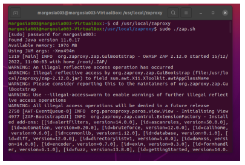
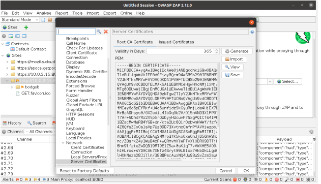
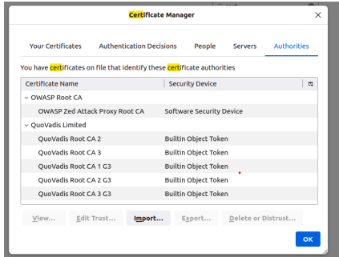
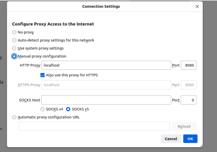
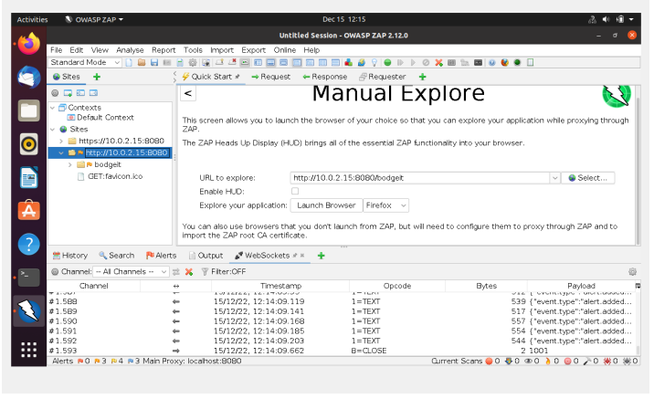
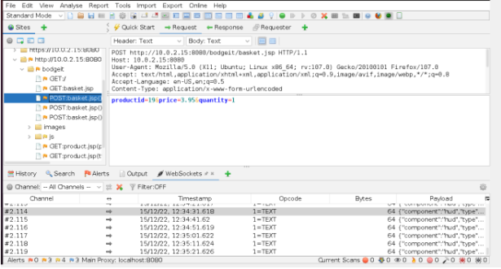
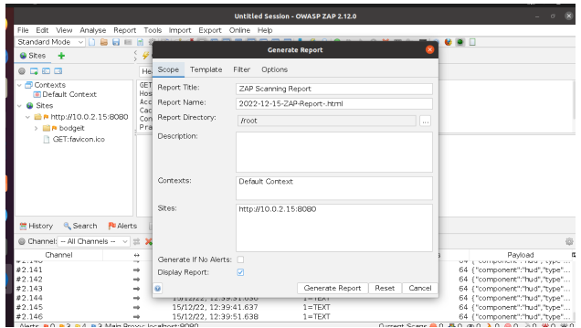

October 2023
This project demonstrates the use of OWASP ZAP as a proxy to perform manual scans
of the BodgeIt Store. By intercepting and analyzing traffic, I captured user actions
and data interactions during the store browsing session.
Steps Performed
- Added two items to the BodgeIt Store shopping cart to generate traffic.
- Installed and launched OWASP ZAP.
- Generated a dynamic SSL certificate and imported it into my browser.
- Configured browser proxy settings to route traffic through OWASP ZAP.
- Navigated to the BodgeIt Store while ZAP intercepted all requests.
- Manually initiated a ZAP scan on the store URL.
- Verified the scan completed successfully.
Screenshots







❮
❯
Findings
- Captured all HTTP requests and responses between browser and store.
- Tracked host and user-agent information.
- Monitored user actions such as item addition and quantity changes.
- Observed how the shopping cart updates were intercepted in real time.
Conclusion
The OWASP ZAP scan successfully intercepted and analyzed network traffic, demonstrating
the importance of security testing for web applications. The experiment showed how
proxy-based scanning can reveal user activity and sensitive information within a web store.